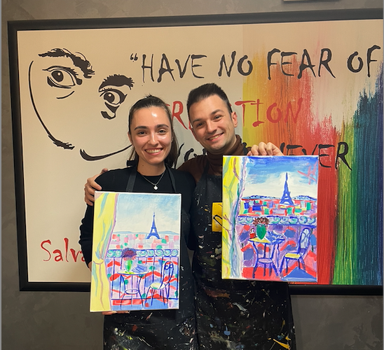

Какаааашииии, толковааа многоооо снимкииии, толковааа много прекрасни моменти. Наистина просто ги гледам и не мога да си сваля усмивката от лицето. Опитах се да направя някакъв колаж, в който да покажа по-основните неща от годината, но то човек, просто не може да се събере. ПОЖЕЛАВАМ НИ БЕБО, за напред да имаме още, още и още преживявания, които да превръщаме в спомени, и то такива...
Наистина са страшно много снимки, но в моето сърце това е снимката, която е просто моят фав. Конкуренцията е скандална, но просто биба.....
